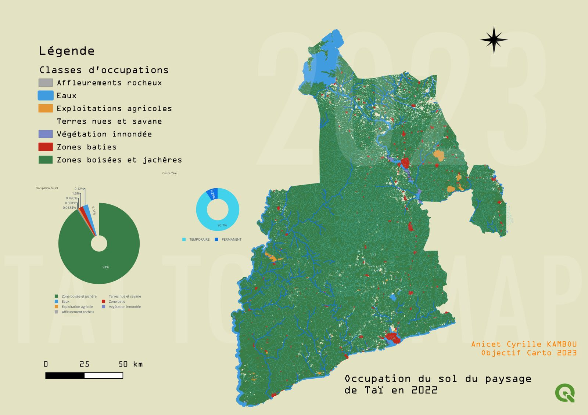

Note : Cet article s'adresse aux techniciens SIG, agronomes, responsables de coopératives et étudiants qui travaillent sur la filière cacao. Les dates et chiffres sont à jour en novembre 2026. La réglementation évolue : vérifiez toujours les textes officiels cités en fin d'article.
Depuis le 1er septembre 2026, aucun sac de cacao ne devrait plus être acheté en Côte d'Ivoire sans que la carte du producteur soit scannée. Le 30 décembre 2026, le règlement européen contre la déforestation, l'EUDR, entre en application pour les grands opérateurs. Les deux échéances sont liées : l'Europe veut savoir de quelle parcelle vient chaque fève, et la preuve que cette parcelle n'a pas été gagnée sur la forêt.
Cette exigence transforme une question agronomique et foncière en une question de données géographiques. C'est précisément là que le SIG devient indispensable.
Ce que dit l'EUDR, en clair
Le Règlement (UE) 2023/1115 interdit de mettre sur le marché européen, ou d'exporter depuis l'Europe, sept produits et leurs dérivés s'ils sont liés à la déforestation : le cacao, le café, l'huile de palme, le soja, le caoutchouc, le bois et les bovins. Chocolat, beurre et poudre de cacao sont donc concernés.
Pour être autorisé, un lot doit remplir trois conditions :
- Zéro déforestation : les fèves proviennent de parcelles qui n'ont pas été déboisées après le 31 décembre 2020.
- Légalité : la production respecte les lois du pays d'origine (foncier, droit forestier, droit du travail, fiscalité, etc.).
- Diligence raisonnée : l'opérateur européen dépose une déclaration dans le système d'information de l'UE, avec la géolocalisation de toutes les parcelles d'origine.
Le calendrier actuel
L'application a déjà été reportée deux fois. Après l'amendement de décembre 2025 (Règlement (UE) 2025/2650), les dates sont les suivantes :
| Qui ? | À partir de |
|---|---|
| Grands et moyens opérateurs, ainsi que les commerçants en aval | 30 décembre 2026 |
| Micro et petites entreprises | 30 juin 2027 |
En mai 2026, la Commission a publié un paquet de simplification, par exemple une déclaration simplifiée unique pour certains petits opérateurs de pays à faible risque. Elle a aussi annoncé qu'il n'y aurait pas de nouveau report. En pratique, les exportateurs et leurs clients européens exigent déjà des données de parcelles conformes.
Important : L'EUDR s'applique aux entreprises qui vendent sur le marché européen, pas directement aux planteurs ivoiriens. Mais ce sont les données collectées dans les coopératives qui rendent l'export possible ou non.
Pourquoi la Côte d'Ivoire est en première ligne
Premier producteur mondial avec environ 40 % de l'offre, la Côte d'Ivoire envoie une grande partie de son cacao vers l'Europe. Le pays a aussi perdu la majeure partie de sa forêt au cours des dernières décennies, et l'expansion cacaoyère y a joué un rôle majeur, y compris dans des forêts classées et des aires protégées.

L'État a anticipé. Le Conseil du Café-Cacao (CCC) a lancé le Système National de Traçabilité (SNT), avec recensement des producteurs, géolocalisation des vergers et carte du producteur. Selon les chiffres du CCC rapportés par la presse, plus de 1,1 million de producteurs ont été recensés et environ 3 millions d'hectares géolocalisés. Depuis l'ouverture de la campagne 2026-2027, l'acheteur doit scanner la carte avant de payer, et la transaction est enregistrée au nom du producteur.
La carte relie un sac à un producteur. Elle ne prouve pas à elle seule que chaque parcelle de ce producteur est conforme. Il faut pour cela des polygones de bonne qualité, croisés avec des données forestières. C'est le travail du géomaticien.
La géolocalisation exigée : les règles techniques
Le règlement est précis sur le format attendu :
- Système de coordonnées : WGS84 (EPSG:4326), latitude et longitude en degrés décimaux
- Précision : au moins 6 décimales, soit environ 10 cm à l'équateur
- Parcelle de 4 ha ou moins : un seul point suffit
- Parcelle de plus de 4 ha : un polygone est obligatoire
- Format d'échange : GeoJSON, accepté par le système d'information de l'UE
La plupart des parcelles cacaoyères ivoiriennes font moins de 4 ha, et un point est donc légalement suffisant. Je recommande pourtant de relever un polygone partout où c'est possible. Un point ne permet pas de vérifier ce qui s'est passé sur toute la surface. En cas de contrôle ou de doute sur la superficie, c'est le polygone qui protège la coopérative.
La chaîne de travail SIG en 5 étapes
Étape 1 : Collecte sur le terrain
Les outils de référence sont KoboToolbox ou ODK Collect sur smartphone, ou les applications fournies par les exportateurs et le CCC. Le technicien fait le tour de la parcelle avec le planteur en enregistrant une trace (geotrace ou geoshape).
- Rattacher chaque parcelle à l'identifiant du producteur (numéro de la carte), sans saisie manuelle si possible
- Noter la superficie déclarée par le planteur, pour la comparer ensuite à la superficie mesurée
- Noter l'année de création du verger et la présence d'arbres d'ombrage
- Sous une canopée dense, le GPS d'un smartphone peut dériver de 5 à 15 m. Ralentissez, attendez que la précision se stabilise et évitez les relevés par temps très couvert
Étape 2 : Contrôle qualité des polygones
C'est l'étape la plus souvent négligée, et celle qui fait échouer les déclarations. Dans QGIS, les outils Vérifier la validité et Vérificateur de topologie détectent l'essentiel :
- Auto-intersections (polygone « en 8 » lorsque le technicien revient sur ses pas)
- Chevauchements entre parcelles voisines ou entre deux producteurs
- Doublons : la même parcelle déclarée par deux personnes
- Superficies aberrantes : une parcelle mesurée à 12 ha pour 2 ha déclarés mérite une visite
- Points de plus de 4 ha qui auraient dû être relevés en polygone
Étape 3 : Croisement avec les données forestières et les aires protégées
On superpose ensuite les parcelles à plusieurs couches de référence :
- Carte JRC « Global Forest Cover 2020 » (Observatoire européen des forêts) : état du couvert forestier à la date butoir
- Hansen / Global Forest Change (Université du Maryland) : pertes de couvert arboré année par année
- JRC Tropical Moist Forest : distingue déforestation et dégradation en forêt tropicale humide
- Aires protégées (parcs nationaux, réserves) et forêts classées (SODEFOR)
Étape 4 : Analyse de risque
Chaque parcelle reçoit un niveau de risque : faible (aucune perte forestière détectée après 2020, hors aire protégée), à vérifier (signal faible ou ambigu) ou élevé (perte nette après 2020, ou parcelle dans une forêt classée). L'outil libre Whisp de la FAO automatise une grande partie de ce croisement à partir de nombreuses couches mondiales.
Étape 5 : Export et partage
Les parcelles validées sont exportées en GeoJSON (WGS84, 6 décimales) et transmises à l'exportateur. Gardez une version archivée de chaque export : l'EUDR impose de conserver les informations pendant 5 ans.
Exemple de code : contrôler ses parcelles avec Python
Ce script GeoPandas automatise l'étape 2 et prépare l'export :
import geopandas as gpd
# Parcelles exportées depuis KoboToolbox / ODK
parcelles = gpd.read_file("parcelles_kobo.geojson").to_crs(4326)
# 1. Géométries invalides (auto-intersections, etc.)
invalides = parcelles[~parcelles.is_valid]
print(f"{len(invalides)} polygones invalides à corriger")
parcelles["geometry"] = parcelles.make_valid()
# 2. Superficie mesurée en hectares (projection UTM adaptée à la zone)
parcelles["surface_ha"] = parcelles.to_crs(parcelles.estimate_utm_crs()).area / 10_000
ecart = parcelles["surface_ha"] / parcelles["surface_declaree_ha"]
a_verifier = parcelles[(ecart > 1.5) | (ecart < 0.5)]
# 3. Points de plus de 4 ha : polygone obligatoire
points_hors_regle = parcelles[(parcelles.geom_type == "Point")
& (parcelles["surface_declaree_ha"] > 4)]
# 4. Chevauchements entre parcelles
chevauchements = gpd.sjoin(parcelles, parcelles, predicate="overlaps")
# 5. Parcelles touchant une aire protégée ou une forêt classée
aires = gpd.read_file("aires_protegees_ci.gpkg").to_crs(4326)
dans_aire = gpd.sjoin(parcelles, aires, predicate="intersects")
# Export GeoJSON WGS84 à 6 décimales
parcelles.to_file("parcelles_eudr.geojson", driver="GeoJSON",
COORDINATE_PRECISION=6)Détecter une perte forestière après 2020 avec Google Earth Engine
Pour l'étape 3, Google Earth Engine évite de télécharger des rasters volumineux. Cet exemple calcule la surface de couvert arboré perdue après 2020 sur une parcelle :
import ee
ee.Initialize(project="mon-projet-gee")
gfc = ee.Image("UMD/hansen/global_forest_change_2023_v1_11")
# lossyear : 1 = 2001 ... 23 = 2023 → 21 et plus = après la date butoir EUDR
perte_post_2020 = gfc.select("lossyear").gte(21)
# Parcelle d'exemple (région de Soubré)
parcelle = ee.Geometry.Polygon([[[-6.600, 5.780], [-6.596, 5.780],
[-6.596, 5.784], [-6.600, 5.784]]])
resultat = perte_post_2020.multiply(ee.Image.pixelArea()).reduceRegion(
reducer=ee.Reducer.sum(), geometry=parcelle, scale=30)
print(f"Perte après 2020 : {resultat.getInfo()['lossyear'] / 10_000:.2f} ha")Attention aux faux positifs : Hansen mesure une perte de couvert arboré, pas une déforestation au sens juridique. L'abattage d'arbres d'ombrage, la replantation d'un vieux verger ou un défrichement de jachère peuvent apparaître comme des pertes. À l'inverse, du cacao planté sous une forêt éclaircie peut passer inaperçu. Un signal positif doit toujours être vérifié visuellement sur des images Sentinel-2 ou l'historique Google Earth, et si besoin sur le terrain.
Le regard de l'agronome : ce que les satellites ne voient pas
Les données satellitaires ne suffisent pas. Plusieurs réalités du terrain ivoirien demandent une lecture agronomique :
- L'âge du verger est un indicateur clé. Des cacaoyers de 3 ou 4 ans en zone autrefois forestière méritent une vérification. Un verger de 25 ans en déclin est rarement un problème EUDR.
- Agroforesterie ou forêt ? Un cacao sous ombrage bien installé avant 2020 n'est pas une forêt au sens du règlement. Il faut pouvoir le documenter, et la norme ARS 1000 pousse justement vers ces systèmes.
- Plusieurs parcelles par producteur. Un planteur peut avoir un vieux verger conforme et une jeune parcelle problématique. La conformité se juge parcelle par parcelle.
- Le foncier. Métayage, contrats « planter-partager » et parcelles sans certificat foncier compliquent la question de la légalité, et le polygone seul n'y répond pas.
- Le mélange des lots. Si le cacao de parcelles conformes et non conformes est mélangé chez un pisteur, tout le lot devient inutilisable pour l'Europe. La traçabilité doit tenir jusqu'au magasin.
Une opportunité pour les compétences locales
L'EUDR est souvent présenté comme une contrainte, et il en est une pour les petits producteurs. Mais il crée aussi une forte demande de techniciens SIG, d'agents de collecte formés et d'analystes de données capables de maîtriser toute la chaîne, de la parcelle au fichier de déclaration. Les coopératives qui disposent de données propres négocieront mieux avec les exportateurs et accéderont plus facilement aux primes de durabilité.
Pour les étudiants en agronomie et en géomatique, c'est un terrain idéal pour combiner QGIS, Python et télédétection sur un problème réel. Pour bien démarrer, relisez l'article Introduction aux SIG, puis consultez mes formations.
Sources et ressources
- Texte du règlement : Règlement (UE) 2023/1115 sur EUR-Lex
- Page officielle de la Commission européenne : Regulation on deforestation-free products
- Report à décembre 2026 : Access2Markets (Commission européenne)
- Observatoire européen des forêts (carte GFC 2020) : forest-observatory.ec.europa.eu
- Global Forest Watch : globalforestwatch.org
- Jeu de données Hansen sur Earth Engine : Global Forest Change 2000-2023
- Carte du producteur obligatoire : KOACI, août 2026
Conclusion
Avec l'EUDR, la question n'est plus seulement « combien de cacao ? » mais « de quelle parcelle, et cette parcelle était-elle déjà cultivée en 2020 ? ». Pour y répondre, il faut des polygones propres, des données forestières bien interprétées et une connaissance fine du terrain. Le SIG et l'agronomie doivent travailler ensemble.
Vous accompagnez une coopérative ou un projet de traçabilité ? Je peux vous aider pour l'audit de vos données de parcelles, l'analyse de risque déforestation ou la formation de vos équipes. N'hésitez pas à me contacter !